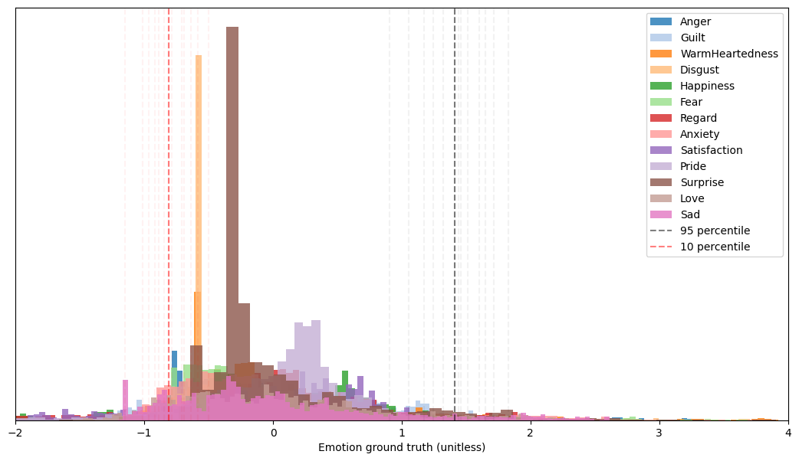
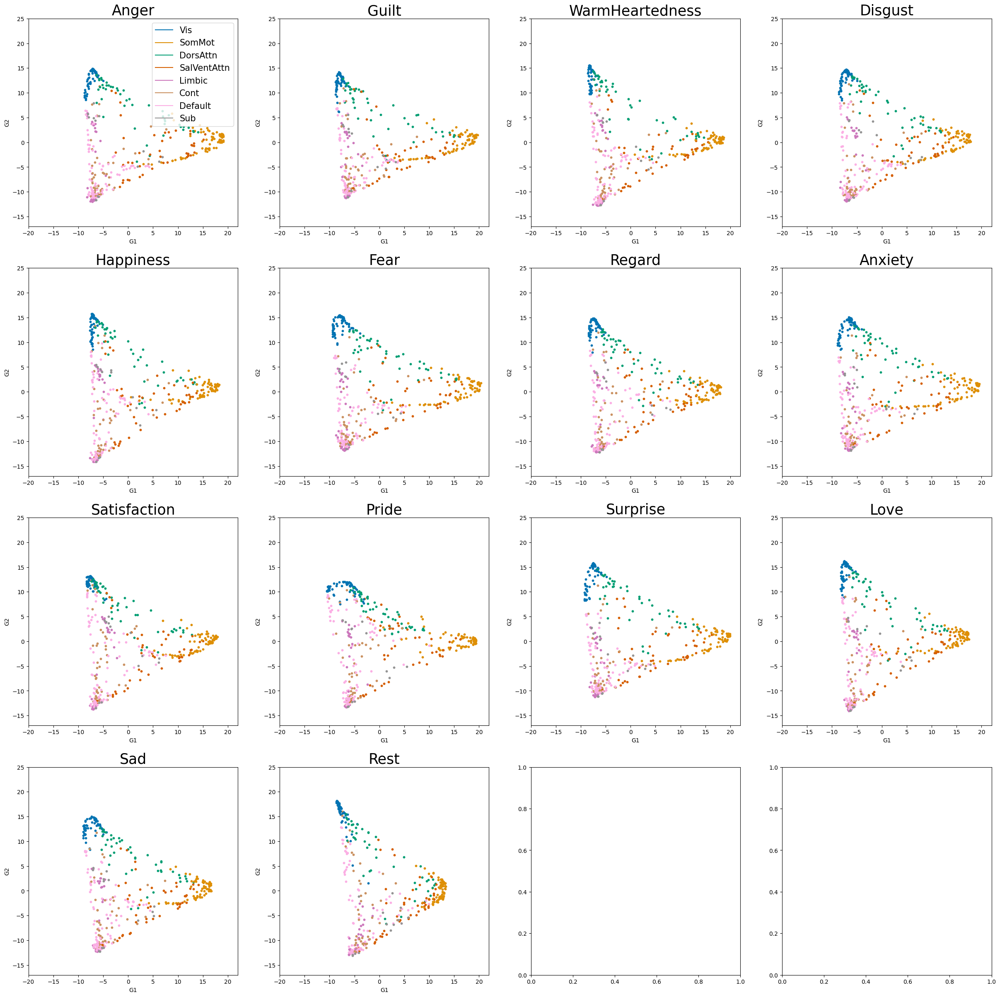
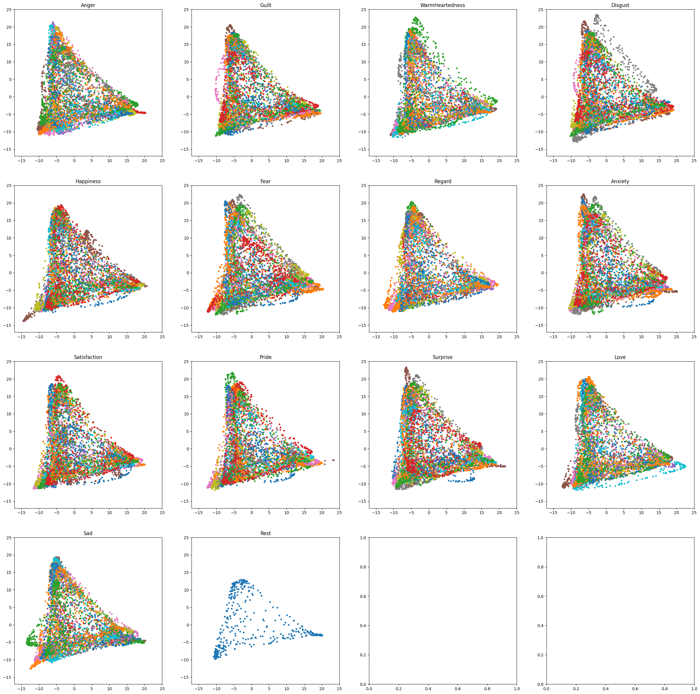
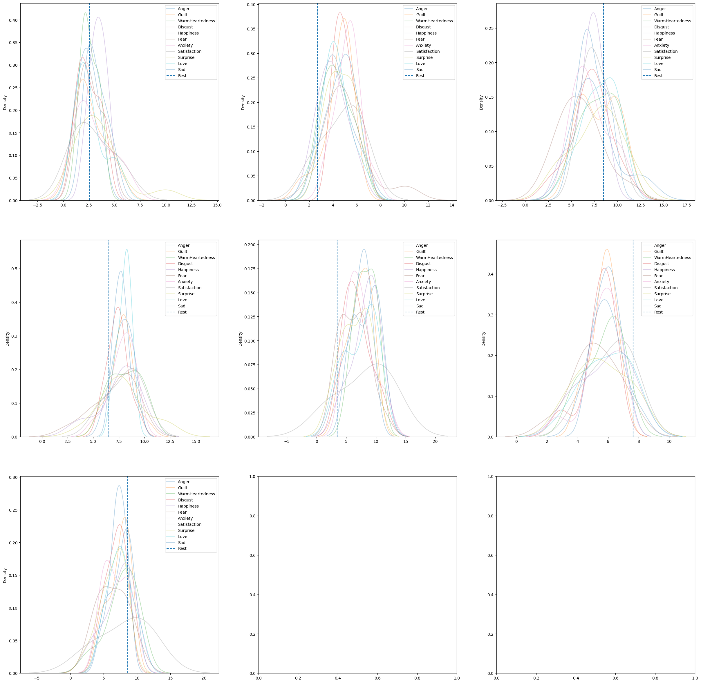

10. Frame-Selection based Gradients
[1]:
from src import *
Table of Contents
[ ]:
mri_path400 = "./data/fmri414_compiled/"
### Frame selected emotion gradients
Selecting snippets for timecourses according to emotion strength
[12]:
select = ['Anger','Guilt','WarmHeartedness', \
'Disgust','Happiness','Fear','Regard','Anxiety', \
'Satisfaction','Pride','Surprise','Love','Sad']
tmpdf = pd.read_csv('./data/emotion_compileBIDS.csv')
Look at distribution of emotion timecourses values across all movies
[106]:
from matplotlib.colors import ListedColormap
pal = sns.color_palette('tab20', len(select))
my_cmap = ListedColormap(pal)
plt.figure(figsize=(13,7))
ex = []
exi = []
for idx,s in enumerate(select):
distrib = np.array(tmpdf[tmpdf.item == s]['score'])
if len(distrib) == 0: continue
percentile = np.argsort(distrib)[int(0.95 * distrib.shape[0])]
invpercentile = np.argsort(distrib)[int(0.1 * distrib.shape[0])]
val = distrib[percentile]
ival = distrib[invpercentile]
ex.append(val)
exi.append(ival)
plt.hist(distrib, bins=100, alpha=0.8, label=s, color=my_cmap.colors[idx])
plt.xlabel('Emotion ground truth (unitless)')
plt.yticks([])
plt.axvline(x = val,color='k', linestyle='--', alpha=0.05)
plt.axvline(x = ival,color='r', linestyle='--', alpha=0.05)
plt.axvline(x = np.mean(ex),color='k', linestyle='--', alpha=0.5, label='95 percentile')
plt.axvline(x = np.mean(exi),color='r', linestyle='--', alpha=0.5, label='10 percentile')
plt.legend()
plt.xlim(-2,4)
[106]:
(-2.0, 4.0)

[97]:
# define cutoff for an emotion
rb = np.mean(ex)
lb = np.mean(exi)
print('Bound for positively intense emotion {}'.format(rb))
print('Bound for negatively intense emotion {}'.format(lb))
Bound for positively intense emotion 1.4091613170599282
Bound for negatively intense emotion -0.8072977844829355
Select frames (timecourses of fmri) according to the previously defined cutoff
[99]:
selected_series = {m.split('_')[0]:{} for m in os.listdir(mri_path400)}
for movie_name400 in tqdm(os.listdir(mri_path400)):
if "Rest" in movie_name400: continue
mri_df400mov = pd.read_csv(mri_path400 + movie_name400)
mname = movie_name400.split('_')[0]
film_duration = FILM2DURATION[mname] # in seconds
duration_film = int(film_duration/ TR) # in number of TRs
front_pad = int(WASH + ONSET) + 1
# Simply replace 400 by 414 to look at spatial relation with subcortical regions included
movies = [m for m in mri_df400mov.filename.unique() if "414" in m]
movie_series = []
for m in movies:
tmp1, _ = df_to_timeseries(mri_df400mov, m)
tmp1 = tmp1[front_pad : front_pad + duration_film]
movie_series.append(tmp1)
movie_series = np.asarray(movie_series)
absemo_df = pd.read_csv('./data/emotion_compileBIDS.csv')
absemo_df = absemo_df[absemo_df['filename']=='W_{}13.csv'.format(mname)]
# select from emotion timeseries frames with strong emotions
for emo in absemo_df.item.unique():
if emo not in select: continue
tmp = np.array(absemo_df[absemo_df.item == emo]['score'])
tmp = tmp[:movie_series.shape[1]]
frame_select = np.where(tmp > rb)[0]
# append volume fmri corresponding to timestamp of intense positive emotion
selected_series[mname][emo] = np.concatenate(movie_series[:,frame_select])
rest_series = []
mri_df400rest = pd.read_csv(mri_path400 + "Rest_compiled414.csv")
rests = [m for m in mri_df400rest.filename.unique() if "414" in m]
for r in rests:
tmp2, _ = df_to_timeseries(mri_df400rest, r)
rest_series.append(tmp2)
rests_series = np.concatenate(rest_series)
Group the emotion series together
[101]:
selected_series['Rest'] = np.concatenate(rest_series)
# separating the extracted gradients
filmrest = select + ['Rest']
select_series2 = {s:[] for s in filmrest}
for mov in selected_series:
if mov == 'Rest':
select_series2['Rest'].append(selected_series[mov])
else:
for emo in selected_series[mov]:
select_series2[emo].append(selected_series[mov][emo])
Compute Gradients for each emotion selected frames
[102]:
# Params
embedding = "dm" # diffusion map
aff_kernel = "pearson" #affinity matrix kernel
align_meth = "procrustes"
n_iter = 10 # procrustes align number of iteration
nb_comp = 3
rs = 99
# Storing
gradients_select = {s: {} for s in selected_series}
gradients_emo = []
# Computing gradients 1
fc_rests = FC(rests_series)
g_rests = GradientMaps(n_components=nb_comp, approach=embedding,
kernel=aff_kernel, random_state=rs)
g_rests.fit(fc_rests)
gradients_select['Rest'] = {'Rest': g_rests.gradients_}
for label in selected_series:
for emo in selected_series[label]:
try:
fc_dominant = FC(selected_series[label][emo])
g = GradientMaps(n_components=nb_comp, approach=embedding, kernel=aff_kernel,
alignment=align_meth,random_state=rs)
g.fit(fc_dominant, reference=g_rests.gradients_)
gradients_select[label][emo] = g.aligned_
except:
continue
# Computing gradients 2
tmp = []
for f in filmrest:
cur_series = np.concatenate(select_series2[f])
g = GradientMaps(n_components=nb_comp, approach=embedding,
kernel=aff_kernel, random_state=rs)
if len(cur_series) == 0:
tmp.append([])
gradients_emo.append(gradients_emo[0])
print(f)
continue
g.fit(FC(cur_series))
tmp.append(FC(cur_series))
gradients_emo.append(g.gradients_)
[103]:
# alignement across all gradients
aligned,_,s = procrustes_align(np.asarray(gradients_emo))
Visualization of computed “emotion” gradients
[105]:
from matplotlib.colors import ListedColormap
pal = sns.color_palette('colorblind', 8)
my_cmap = ListedColormap(pal)
partial_region = load('./resources/region414yeo7.pkl')
colors = {N: my_cmap.colors[idx] for idx, N in enumerate(list(index2region.keys()))}
fig, axes = plt.subplots(4,4, figsize=(30,30))
for k in tqdm(range(len(filmrest))):
row,col = k//4, k%4
samples_grad = aligned[k]
for i in range(len(samples_grad)):
c = partial_region[i]
axes[row,col].scatter([samples_grad[i,0]], [samples_grad[i,1]], s=10, facecolor=colors[c])
axes[row,col].set_title("{}".format(filmrest[k]), size=25)
C = list(colors.values())
labels = list(colors.keys())
dummies = [axes[row,col].plot([], [], ls='-', c=c)[0] for c in C]
axes[row,col].set_xlim(-20,22)
axes[row,col].set_ylim(-17,25)
axes[row,col].set_xlabel('G1')
axes[row,col].set_ylabel('G2')
axes[0,0].legend(dummies, labels, loc=1, prop={'size':15})
plt.show()

Plot the different gradients per emotion per movie
[23]:
from matplotlib.colors import ListedColormap
pal = sns.color_palette('colorblind', 8)
my_cmap = ListedColormap(pal)
partial_region = load('./resources/region400yeo7.pkl')
colors = {N: my_cmap.colors[idx] for idx, N in enumerate(list(index2region.keys()))}
filmrest = select + ['Rest']
fig, axes = plt.subplots(4,4, figsize=(30,30))
for k in tqdm(range(len(filmrest))):
row,col = k//4, k%4
for mov in gradients_select:
if filmrest[k] not in gradients_select[mov]: continue
samples_grad = gradients_select[mov][filmrest[k]]
axes[row,col].scatter([samples_grad[:,0]], [samples_grad[:,1]], s=10)
# for i in range(len(samples_grad)):
# c = partial_region[i]
# axes[row,col].scatter([samples_grad[i,0]], [samples_grad[i,1]], s=10, facecolor=colors[c])
axes[row,col].set_title("{}".format(filmrest[k]), size=12)
# C = list(colors.values())
# labels = list(colors.keys())
# dummies = [axes[row,col].plot([], [], ls='-', c=c)[0] for c in C]
# axes[row,col].legend(dummies, labels, loc=1, prop={'size':7})
axes[row,col].set_xlim(-17,25)
axes[row,col].set_ylim(-17,25)
plt.show()

Look at distribution per movie of each points
[175]:
networks = list(index2region.keys())
# separating the extracted gradients
gradients2_select = {s:[] for s in filmrest}
for mov in gradients_select:
for emo in gradients_select[mov]:
if mov == 'Rest':
gradients2_select['Rest'].append(gradients_select[mov][emo])
else:
gradients2_select[emo].append(gradients_select[mov][emo])
fig, axes = plt.subplots(3,3, figsize=(30,30))
for s in filmrest:
tmp = np.asarray([np.asarray([network_volume(G, R) for idx, R in enumerate(networks)])
for G in gradients2_select[s]])
if len(tmp) == 0: continue
# print(tmp.shape[1])
if s == 'Rest':
for i in range(tmp.shape[1]):
row,col = i//3, i%3
axes[row,col].axvline(x=tmp[0][i], label='Rest', linestyle='--')
else:
for i in range(tmp.shape[1]):
row,col = i//3, i%3
sns.kdeplot(tmp[:,i], label=s, alpha=0.3, ax = axes[row,col])
# axes[row,col].hist(tmp[:,i], label=s, alpha=0.3)
for i in range(7):
row,col = i//3, i%3
axes[row,col].legend()

[ ]: